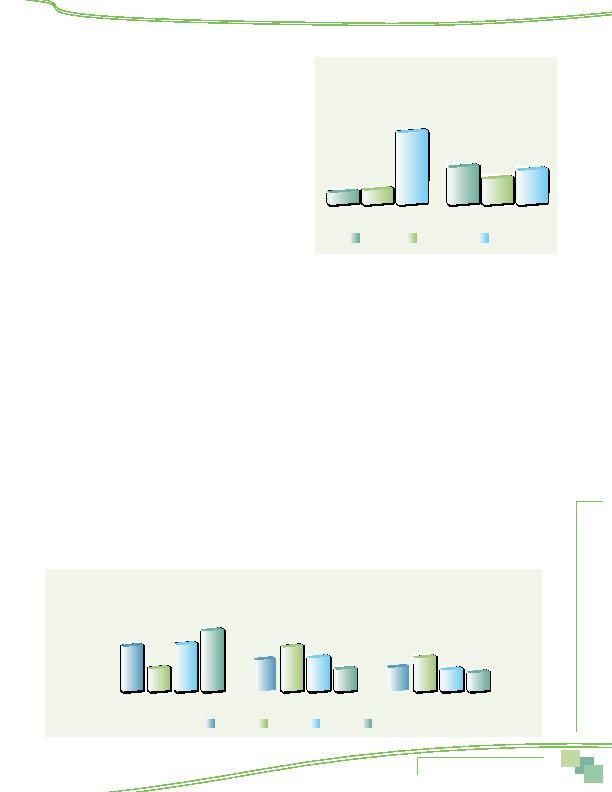

MWCOG-Comm
uter Conn
ecti
on
s-- 2010 State o
f th
e Comm
ute Report
3 1
Interest in HOT Lanes
The 2010 survey included two new questions related to commuters'
interest in High Occupancy Toll (HOT) lanes, which are under construc-
tion or being proposed for several jurisdictions. Respondents were
asked about their interest in carpooling or vanpooling on a toll road
that was free or reduced cost for carpools and vanpools. Respondents
who were not ridesharing were asked: "Several jurisdictions in the
Washington region are building or considering building toll roads. If
you could use one of these roads for your trip to work and carpools and
vanpools traveled for free or for a reduced toll, how likely would you be
to start carpooling or vanpooling to use these roads?"
Respondents who were carpooling or vanpooling were asked how
likely they would be to register their carpool or vanpool with a regional
commute organization to be able to receive the discount: "... If you
could use one of these roads for your trip to work and carpools and
vanpools that registered with a regional commute organization could
use these roads for free or for a reduced toll, how likely would you be
to register your carpool or vanpool?" Results for both of these questions are presented in Figure 25.
About a quarter (26%) of non-ridesharers said they were either very likely (12%) or somewhat likely (14%) to start ridesharing to
use the lanes. Current ridesharers were more willing to register their carpools/vanpools to receive the discount; two-thirds said they
were either very likely (39%) or somewhat likely (27%) to register their carpool/vanpool to use the lanes at a discount.
Interest in HOT lanes did not vary substantially across the three "ring" sub-areas of the region. About 22% of respondents who
lived in the Inner Core said they would be likely to try ridesharing. Middle Ring and Outer Ring respondents were only slightly more
interested; about 26% of Middle Ring and 30% of Outer Ring respondents said they were likely to try ridesharing to use the lanes at a
reduced price.
PARK AND RIDE LOTS
Figure 26 depicts respondents' awareness of the locations of Park and Ride (P&R) lots along their route to work. Forty-five percent
of respondents across the region said they knew the locations of P&R lots along their commuting route. About a third (32%) said they
did not know the locations. A quarter (23%) said there were no P&R lots along their route to work.
The figure also shows that awareness/availability of lots varied substantially by home location in the region. Respondents who lived
in the Inner Core were least likely to say they knew of a P&R lot on their route; only 23% of these respondents knew of a lot, while
47% of respondents who lived in the Middle Ring and 60% of respondents in the Outer Ring knew of a lot along their route to work.
Two in ten (21%) of those who knew Park and Ride lot locations had used these lots when commuting during the past year. These
respondents represented nine percent of total respondents in the survey, slightly higher than the seven percent of respondents who
reported use of P&R lots in the 2007 SOC survey. Use of P&R lots was more common among respondents who lived in the Middle Ring
(24%) and Outer Ring (19%) than for Inner Core (15%) residents. But respondents who worked in the Inner Core used P&R lots at
a much higher rate than did other respondents. A third of Inner Core workers who knew of the lots had used them in the past year,
compared with just one in ten respondents who worked in the Middle Ring (11%) or Outer Ring (9%).
Figure 25
Likely to try Carpool/Vanpool
or to Register Existing Carpool/Vanpool
to Receive HOT Lane Discount
Try carpool/vanpool
Register carpool/vanpool
12%
14%
74%
39%
27%
34%
Very likely
Somewhat likely
Not likely
45%
60%
47%
Figure 26
Awareness of Park & Ride Lots Along Route to Work By Home Location
Inner Core
Know P&R location
23%
32%
22%
32%
Don't know location
44%
23%
18%
21%
No P&R lots
33%
Middle Ring
Outer Ring
All region
Availability of and Attitudes Toward
Transportation Options